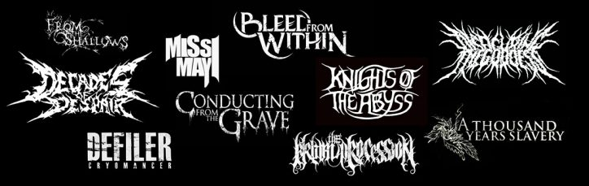

Historia Del Deathcore.
Deathcore es un genero musical que incorpora elementos del metalcore con death metal y hardcore punk. El deathcore nacio de la fusion del metalcore y el death metal como base, usando también elementos grindcore, y en algunas ocasiones del black metal. Sus inicios se remontan finales de los 90 con bandas como Suicide Silence, Antagony, Despised Icon, Job for a Cowboy, Animosity, All Shall Perish, Whitechapel, Glass Casket, The Acacia Strain, The Red Chord, Through the Eyes of the Dead, entre otras. 